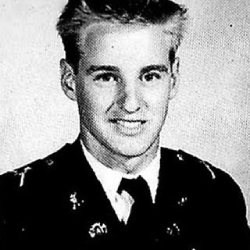
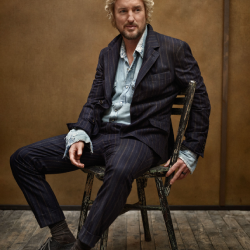
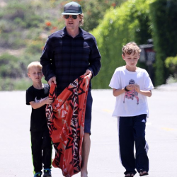
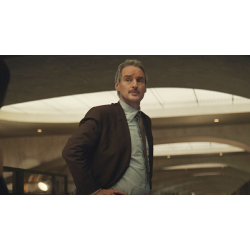

Owen Cunningham Wilson was born in Dallas, to Irish-American parents
originally from
Massachusetts. He grew up in Texas with his mother,Laura Cunningham a photographer; his
father, Robert Andrew Wilson, an advertising executive and operator of a public television
station; and his brothers,Andrew Wilson,(the eldest) and Luke Wilson (the youngest).
Owen wilson's picture.
Owen was always considered the troublemaker in the family as he was known for brawling and
troubling
everyone. Wilson was expelled in tenth grade from St. Mark’s School of Texas. His two brothers were also
actors in the present day.
EDUCATION
After getting expelled for cheating in geometry, he attended New Mexico Military Institute.
He later
attended the University of Texas at Austin, where he pursued a Bachelor of Arts degree in English, but
did not graduate.While in college, he met and was roommates with director and frequent collaborator
Wes Anderson.

Owen wilson's military photo.
Expelled from St. Mark's School of Texas (Dallas, TX) in the tenth grade, Wilson finished his
sophomore year at
Thomas Jefferson School and then headed to a military academy in New Mexico. He then attended the University of
Texas at Austin, where he met his future mentor and friend, Wes Anderson. They wrote a screenplay, Bottle Rocket
(1996), and sent it to their family friend, screenwriter L.M. Kit Carson, who sent it to producer Polly Platt,
who gave it to James L. Brooks, who gave the Texans $5 million to make it into a feature film.
PERSONAL LIFE AND CHILDREN
PERSONAL LIFE
In August 2007, Wilson attempted suicide and was subsequently treated for
depressionat
St. John's Health Center and Cedars-Sinai Medical Center in Los Angeles.A few days after
his hospitalization, Wilson withdrew from his role in Tropic Thunder, which was produced by and
co-starred his friend and frequent collaborator Ben Stiller and was replaced by
Matthew McConaughey.The incident resulted in much unwanted publicity for Wilson, and he has
been wary of doing interviews ever since. However, Wilson opened up about his suicide attempt with an
article with Esquire in 2021, 14 years to the month after the event. Within the article, Wilson
described how his older brother,Andrew, supported him during his recovery.In January 2011,
Wilson and his then-girlfriend Jade Duell had a son.[43][44] Wilson and Duell ended their relationship
later that year. In January 2014, he had a son with Caroline Lindqvist.[45][46][47] He had a third
child, a daughter, in October 2018 with ex-girlfriend Varunie Vongsvirates.

Owen wilson is sitting on a chair.
He dated singer Sheryl Crow on and off from 1999 to 2001, then actress Gina Gershon on and
off from 2000
to 2002. He briefly dated actress Demi Moore in 2002. He dated actress Kate Hudson from 2006 to 2009,
and Wilson's brother Andrew reportedly has said that he thought she would become family.
CHILDREN
Despite this, his relationships have not succeeded. The star is not married but he has had
three kids
from his past relationships. His kids, however, live with their mothers although he does his duty as a
father in their lives.Owen Wilson may be one of Hollywood's most famous bachelors — but he is also a
dad. The actor is a father of three children: sons Ford and Finn,, and
daughterLyla. He welcomed his first child, a son named Ford, in January 2011 with
then-girlfriend Jade Duell.Three years later, in January 2014, Wilson had a second son, Finn, with
trainer Caroline Lindqvist. In October 2018, a source confirmed to PEOPLE that Wilson also fathered a
daughter named Lyla with Varunie Vongsvirates.Though Wilson is not in a relationship with any of his
children's mothers, the actor revealed to Esquire in 2021 that he lives nearby his two sons and everyone
gets along.

Owen wilson and his children on the street .
While prepping for his role as a Bob Ross-like artist in the 2023 movie Paint, Wilson told
PEOPLE that he
and his two sons took an art class together. "I took one of those Bob Ross painting classes with my two
boys," he said. "All three of us did a similar mountainscape and I think they turned out pretty good."
CAREER
THE BEGINNINGS
They wrote a screenplay, Bottle Rocket (1996), and sent it to their family friend,
screenwriter L.M. Kit
Carson, who sent it to producerPolly Platt, who gave it to James L. Brooks, who gave the
Texans $5 million to make it into a feature film.After his film debut in Bottle Rocket (1996), Wilson
co-wrote with Wes Anderson the script for Anderson's next two directorial films, Rushmore and
The Royal Tenenbaums, for which they garnered an Oscar nomination for Best Original
Screenplay. While Wilson did not act in Rushmore, he appears briefly in a photograph in the film. Wilson
then landed a role in The Cable Guy, directed by Ben Stiller, an early admirer of Bottle
Rocket.
Owen wilson is speaking on microphone.
After appearing in supporting roles in action films like Anaconda and Armageddon
and
the horror film The Haunting, Wilson appeared in two dramatic roles: a supporting role in
Permanent Midnight, which starred Stiller as a drug-addicted TV writer; and the lead role (as a serial
killer) in The Minus Man, in which his future girlfriend, singer Sheryl Crow, was a
co-star.
FAMOUS MOVIES
Wilson starred in the 2000 comedy action filmShanghai Noon alongside Jackie
Chan. The
film grossed nearly $100 million worldwide. His fame continued to rise after starring alongside Ben
Stiller and Will Ferrell in the 2001 film Zoolander.
Owen Wilson and JACKIE CHAN.
Wilson returned to the buddy-comedy genre in 2002 with the action comedy I Spy, co-starring
Eddie
Murphy. The big-screen remake of the same-named television series did not perform well at the
box office. He made a cameo appearance in the Girl Skateboards video Yeah Right! in 2003. He then
reunited with Chan to make Shanghai Knights (2003), and co-starred in the film remake of the
1970s television series Starsky & Hutch (2004). Due to his busy schedule as an actor and an ongoing
sinus condition, Wilson was unavailable to collaborate on the script for Wes Anderson's fourth feature
film, The Life Aquatic with Steve Zissou.
OWEN WILSON AWARDS ,NOMINATIONS ,DATES, MOVIES
NAMES OF AWARDS
NUMBERS OF WINNING
NUMBERS OF NOMINATIONS
YEAR OF AWARDS
MOVIES
Academy Awards
0
1
2001
The Royal Tenenbaums
British Academy Film Awards
0
1
2001
The Royal Tenenbaums
Golden Globe Awards
0
1
2011
Woody Allen and Midnight in Paris
Screen actors Guild Awards
0
2
2011
The Grand Budapest Hotel
The Independent Spirit Robert Altman Awards
1
1
2014
Inherent Vice
RECENTS MOVIES
In 2014, Wilson appeared in Wes Anderson's acclaimed ensemble comedy The Grand Budapest Hotel
and in Paul
Thomas Anderson's book adaptation of Inherent Vice. In 2015, he starred with Jennifer Anistonin
Peter Bogdanovich's film She's Funny That Way, and in the action thriller film No Escape
alongside Lake Bell and Pierce Brosnan. Wilson's films have grossed more than US$2.25 billion
domestically (United States and Canada), with an average of US$75M per film. In 2017,
Wilson again voiced Lightning McQueen inCars 3, played a suburban father in the drama
Wonder, and co-starred with Ed Helms in the comedy Father Figures.

Recent picture of Owen on shooting scene.
In 2021, Wilson starred in the comedy filmBLISSdirected by Mike Cahill opposite
Salma Hayek for
Amazon Studios.In 2021, Wilson also reunited with Wes Anderson for The French Dispatch, which premiered
at the 2021 Cannes Film Festival, and ,MARRY ME alongside JENNIFER
LOPEZand directed by KAT COIRO for Universal Pictures. Wilson is
currently starring in THE MARVEL CINEMATIC UNIVERSE series Loki opposite Tom Hiddleston on
Disney+ as Mobius M. Mobius. He also signed on to star in a new film adaptation of The Haunted Mansion.
Paint 2023 Film
Paint is a 2023 American comedy-drama film written and directed by Brit McAdams. The film
stars Owen Wilson,
Michaela Watkins, Ciara Renée, Stephen Root, Wendi McLendon-Covey, Lucy Freyer, Lusia Strus, and Michael
Pemberton. Paint was released in the United States on April 7, 2023, by IFC Films.
SOME MOVIES AND HIS ROLE
In 1994,in the film Bottle Rocket,he was Dignan.
In 1997,in the film Anaconda,he was Gary Dixon.
In 1999,in the film THE HUNTING,he was Luke Sanderson.
In 2017,in the film CARS 3, he was Lightning McQueen.
In 2022,in the filmSecret Headquarters,he was Jack Kincaid,the guard.
In 2023,in the film Haunted Mansion,his name is Kent.